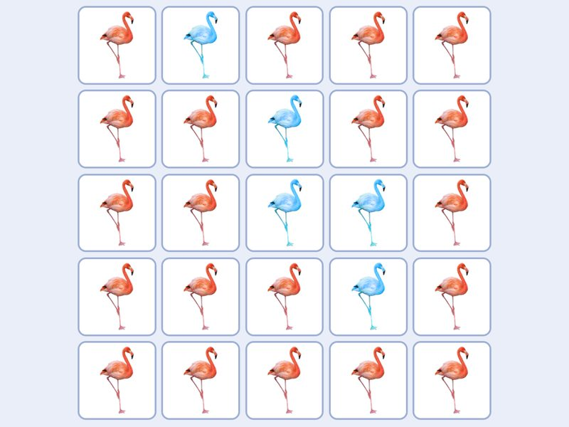
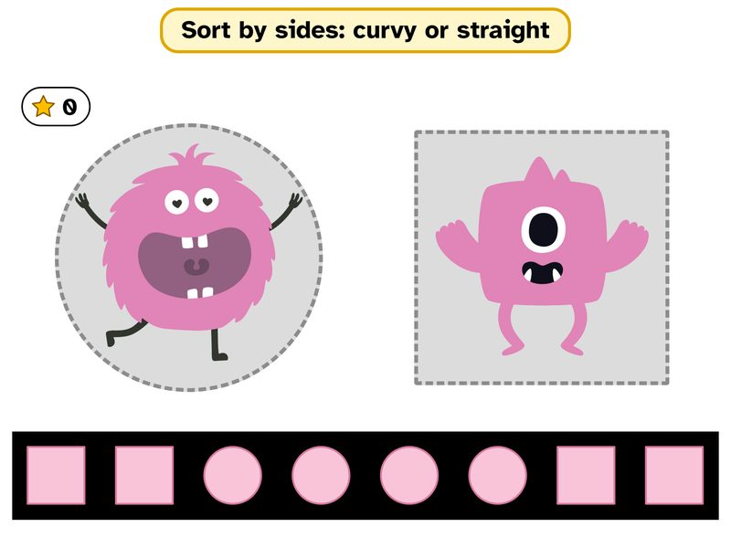
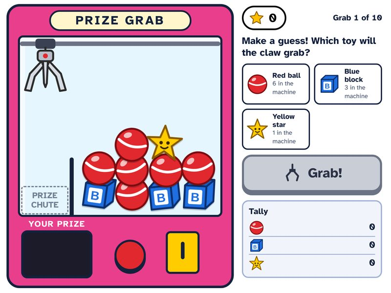
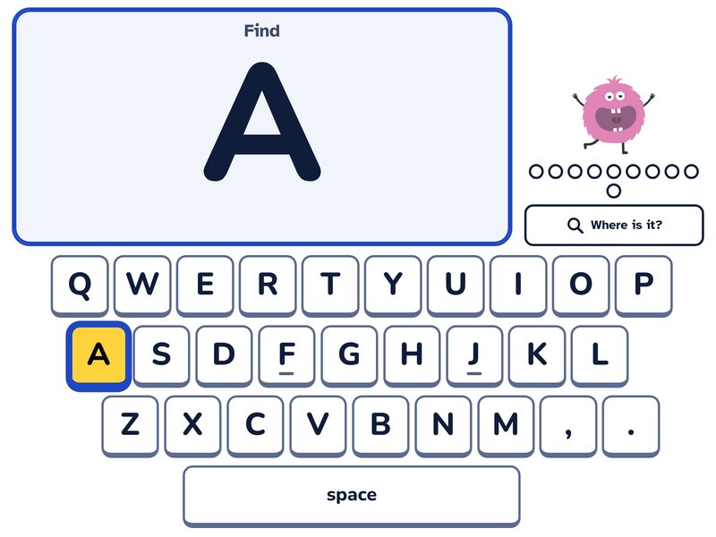
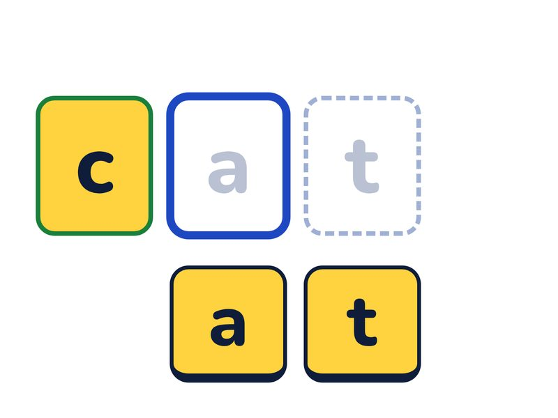
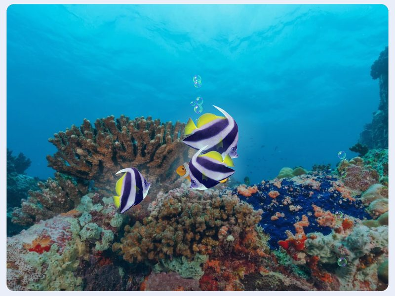

Games
-

Peek and Find. Tap the flamingos to find the surprise. -

Monster Sort. Feed each shape to the right monster. -

Claw Machine. Guess which toy, then grab a prize. -

Monster Keys. Find the letter on the keyboard. -

Sound It Out. Put the sounds together to make a word. -

Sensory Room. Fish, fireworks, bubbles and lights.